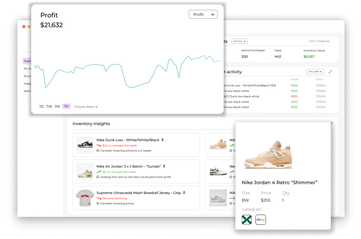
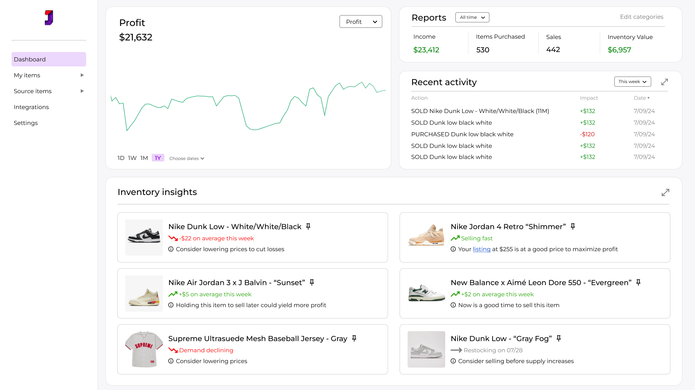
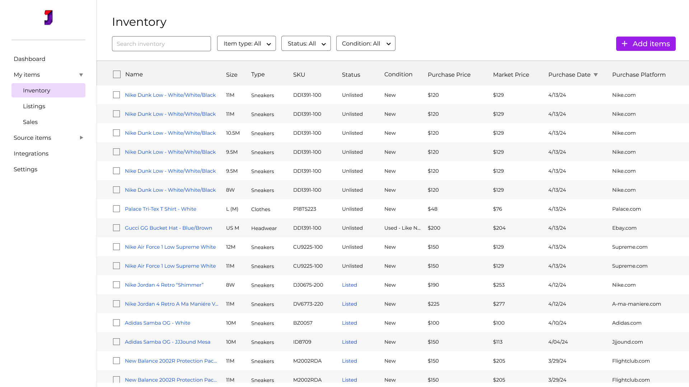
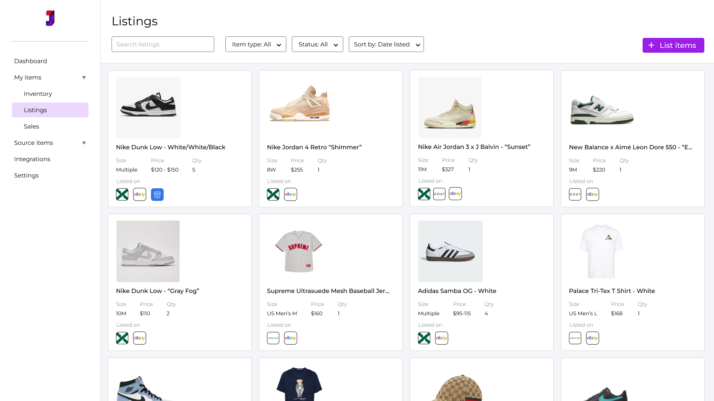
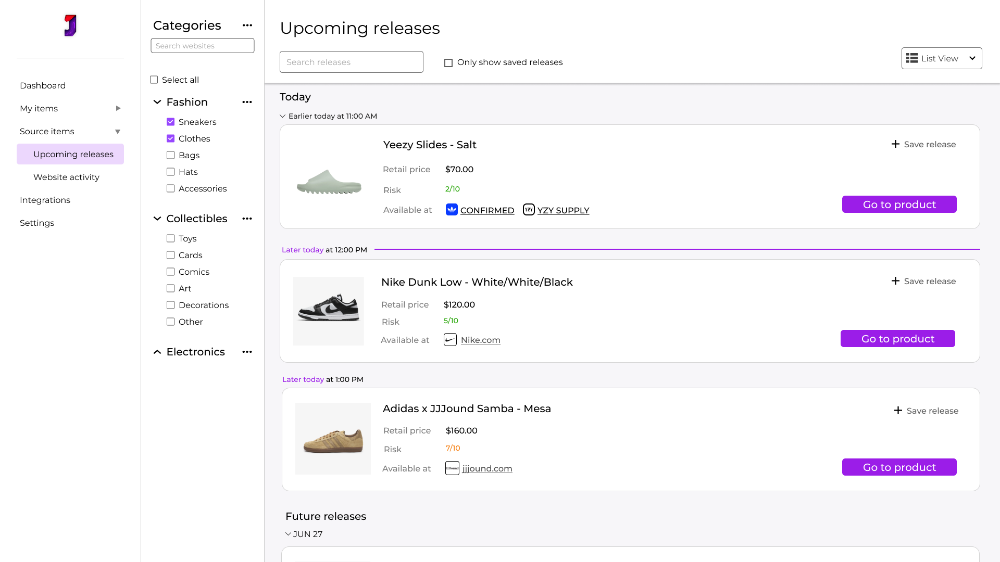
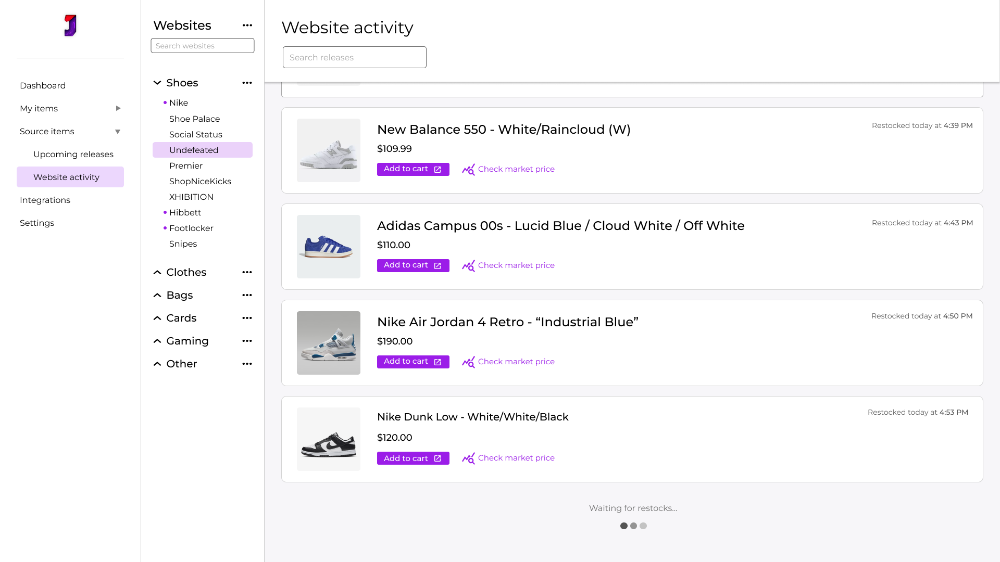

UX Designer
For Juiced, an online community providing resources for secondhand sellers
Interaction design, UX design, UX research
Figma, Jira

Juiced is a membership-based online community of secondhand sellers looking to buy in-demand products and sell for a profit.
The community is currently based on Discord, where members have access to useful information and features like insights on new releases and website monitoring bots. However, a standalone app would allow for much more flexibility and powerful features.
As a longtime member of the Juiced community, I jumped at the opportunity to design the app when its creation was announced. Although progress was made on the app before the announcement, I still decided to tackle the challenge myself, and created designs with both goals of the reselling community and Juiced in mind.
While creating these designs, I served as an alpha tester for the version of the app that already existed at this point. Using my designs as reference, in collaboration with developers and leadership, I had a large contribution to the alpha testing program and suggested many changes for further development of the app.
Managing inventory and sourcing new items to buy can be very difficult. Not only can it be hard to keep track of listings across different platforms, but it can also be difficult to get a good scope of all the items you currently have on hand.
It can also be hard for sellers to find new, hype products to pay attention to, and even more difficult to figure out when to sell them.
The Juiced app adopts many of the fundamentals from the existing Juiced community on Discord - website monitors, a release calendar, and more.
On this app, users can also manage their inventory and listings, as well as get AI-powered insights on inventory and products in context of the current market.

The dashboard screen gives the user an in-depth overview of their buying and selling history.
There are also AI-generated actionable insights about their items and their place in the current market, giving the user tips on how to get the most out of their items.
The inventory page allows the user to keep track of all of their items and important information for each.


With the listings page, the user can see all of the current listings they have on all platforms. Traditionally, it can be difficult to keep track of listings across multiple platforms, and ensuring prices are up to date is even more of a challenge. The listing manager ensures all items are listed on the right platforms, and any important changes can be made quickly and across the board.
Anticipated drops for fashion products and other important item releases will be shown on this page. It will focus on items that are expected to have a high demand, and could resell for profit. Here, users can see important information to make a plan of action to purchase them.


The website activity page has live updates of important sneaker, fashion, and other websites that often sell products that are high in demand. With this tool, users can be notified of restocks of in-demand items to purchase them before anyone else.